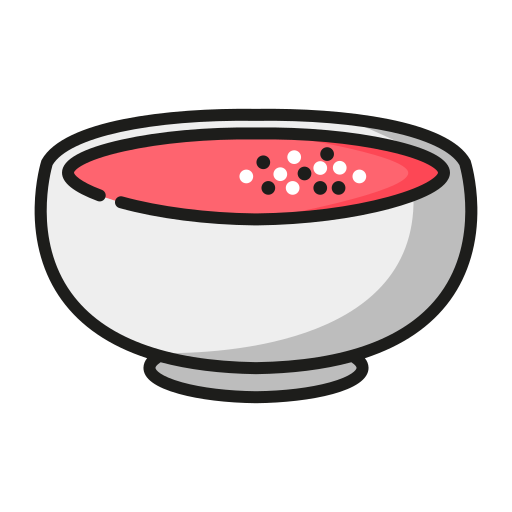

Főbb jellemzők
Származása
Barcelona nem csak a lenyűgöző építészeti csodáiról, homokos tengerparjaitól, nyüzsgő éjszakai életéről híres, hanem a fenséges konyhájáról is. A város gasztronómiáját a katalán, a spanyol és a mediterrán konyha keveredése teszi különlegessé.
- Római Birodalom: a spanyol konyha és annak ételei a Római Birodalom idejére nyúlnak vissza - ekkor még keverték a római kulináris technikákat és recepteket helyi alapanyagokkal, mint például az olajbogyó, a bab és a hal
- Középkor: az arab hatások hatására új fűszerek és technikák jelentek meg, mint például a mandula és a rozmaring használata
- 15-16.század: Spanyolország a tengeri felfedezőutak kiindulópontjává vált, ami nagy mértékben befolyásolta a helyi konyhát
Spanyol konyha, szokások, tipikus hozzávalók
- A spanyol reggeli jellemzően csak egy csésze kávéból és némi péksüteményből, például churrosból áll.
- A délután 2 és 4 között elköltött, több fogásból álló ebéd, a spanyolok fő étkezése, valamivel nagyobb, mint a vacsora.
- Ahogy az ebédet, úgy a vacsorát is viszonylag későn ejtik meg, valamikor 9 és 11 között - sok spanyol étterem konyhája ki sem nyit este 8 előtt.
- olívaolaj - olyan tipikus hozzávaló, amely nélkül egyetlen spanyol recept sem teljes
- fűszerek és gyógynövények, például: paprika, fokhagyma, sáfrány, rozmaring
- különféle tenger gyümölcsei és halak
Leghíresebb spanyol ételek
Paella

Az eredeti verzió, az úgynevezett Paella Valenciana, a kelet-spanyolországi Valencia környékéről származik. Eredetileg a parasztok egyszerű, egyedényes ételeként született meg.
Fő összetevői a rizs, a sáfrány, és az olívaolaj, ezen kívül tengeri falatokkal, hússal, és zöldségekkel körítik. A paella egytálétel, amit fedő nélkül készítenek széles, lapos, kétfülű serpenyőben. A serpenyő alján lévő rizst megpirítják.
Modern változatokban előfordul például csirkés-tengergyümölcsös mix, vagy akár vegetáriánus/vegán verzió is, zöldségekkel.
Tapas

A tapast általában este 9-11 fogyasztják vacsora előtt és mellé bort, sört, vagy sherryt isznak. A tapas általában többféle, igen erősen ízesített tengeri falatokból, esetleg húsból, és kolbászból áll. Madridban, Észak-Spanyolországban, és Andalúzia néhány részén az éttermekben a tapast étvágygerjesztőként, fogpiszkálóra tűzve, ingyen kínálják.
Az egyik legnépszerűbb tapa a patatas bravas: nagyon egyszerűen elkészített de annál finomabb falat: fehérburgonyából készített, ropogós sültkrumpli, csípős paradicsomos, valamint fokhagymaszósszal.
Pa amb tomàquet

Jelentése: paradicsomos kenyér. A gazdag, ropogós kenyér, a nagyon érett paradicsom, egy csipetnyi fokhagyma és a legjobb olívaolaj teszi ezt igazán finommá.
Eredetileg úgynevezett coca kenyeret használtak ehhez a célhoz. Ez régen a maradék kenyértésztából készült, hasonlóan a kenyérlángoshoz: egy lapos lepénykenyér, amelynek héja vékony és ropogós, belseje pedig kevés, könnyű és levegős. A kenyeret vízszintesen kettévágják, majd enyhén megpirítják, hogy még ízletesebb és ropogósabb legyen.
Gazpacho
A gazpacho a paellával együtt a leghíresebb spanyol étel. Története sok száz évre nyúlik vissza, már a 12. században is ismerték.
Andalúziából származik, de egész Spanyolországban találkozhatunk vele. Hidegen felszolgált leves, amelynek fontos összetevője a paradicsom, ezen kívül olívaolajat, fokhagymát, uborkát, erős paprikát, száraz kenyeret, ecetet tartalmazhat.
Churros

A tészta alapja liszt, víz és só (néha tej, vaj vagy tojás is), amit habzsák segítségével csillagvégű nyomózsákból nyomnak forró olajba — így alakul ki a jellegzetes, hosszúkás formája. Miután megsült, gyakran cukorba és fahéjba hempergetik, és hagyományosan forró csokoládéban mártogatva fogyasztják, különösen reggelire vagy uzsonnára.
Az eredetét tekintve több elmélet létezik: van, amely szerint pásztorok találták ki, akiknek hegyi környezetben nem volt kenyérsütési lehetőségük, ezért olajban sütötték a tésztát. Más szerint hasonló ételek — például később az olasz vagy kínai frittyák — is hozzájárulhattak a churros kialakulásához.
Katalán krém (Crema catalana)

Nevének megfelelően ezzel főleg Katalóniában (Barcelonában és környékén) találkozhatunk.
A katalán krém fő alapanyagai tej, tojássárgája, cukor — gyakran kerül bele fahéj és reszelt citrom- vagy narancshéj, amitől jellemzően aromásabb, fűszeresebb íze lesz. Miután a krémet kis tálkákba töltik és lehűtik, tálaláskor kristálycukrot szórnak a tetejére, és grill alatt vagy szakácsfáklyával karamellizálják — így lesz a jellegzetes ropogós, karamellizált cukorhéj a tetején